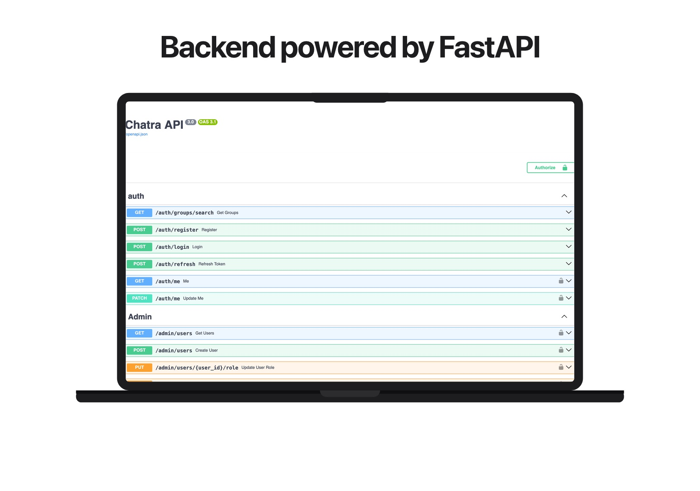
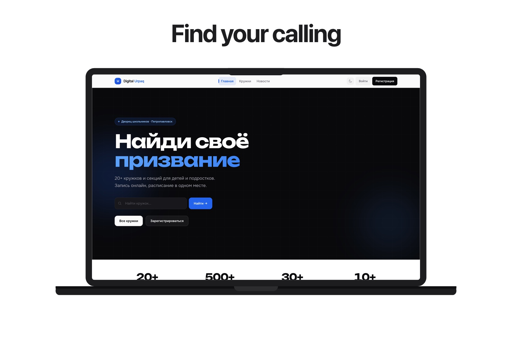
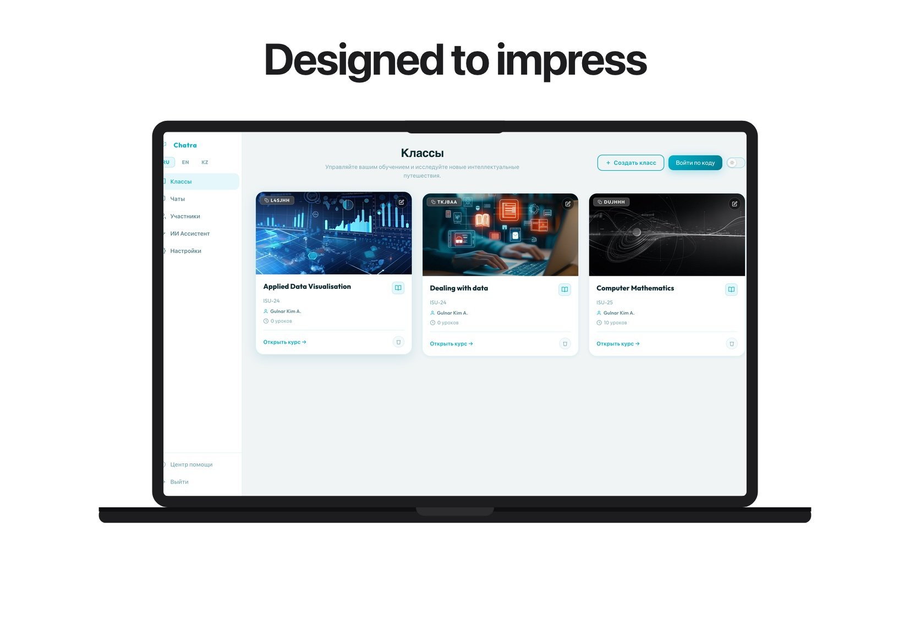
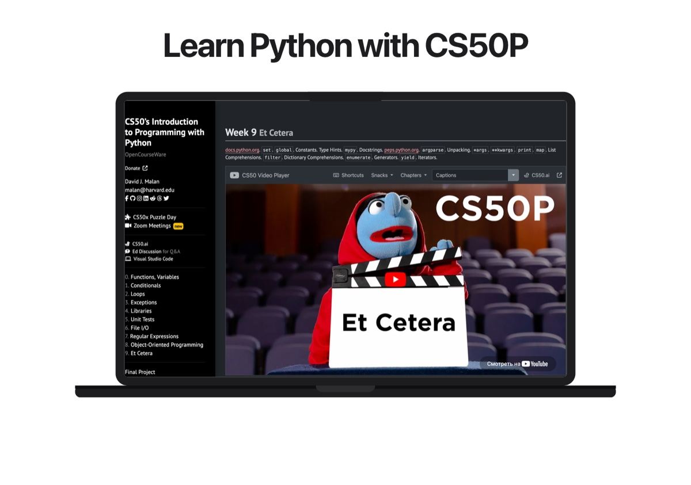
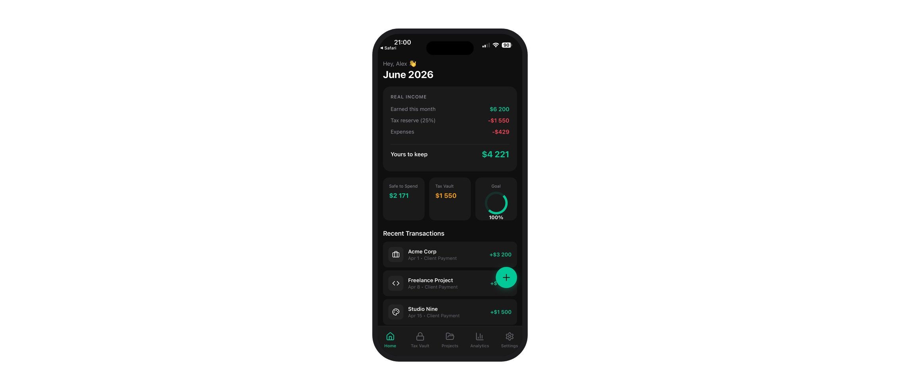

Real products built from scratch. Mobile apps, full-stack platforms, and tools that ship to real users.



Smaller explorations, coursework, and side projects where I tested ideas and sharpened skills.


I'm open to collaborations, freelance work, and interesting problems.